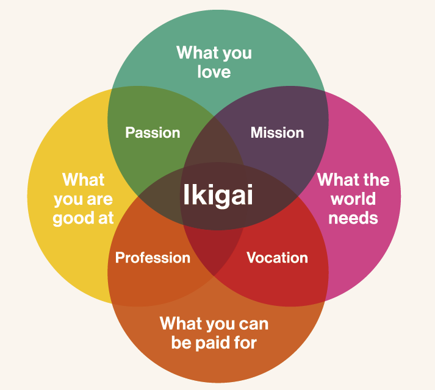

Livestreaming
The strongest proof there is: broadcast the work as it happens.
People have logged weeks like this — and shown the receipts.
The idea isn't new — it's just rarely done in the open.
Independent case study · not affiliated with, or endorsed by, Greg Brockman or OpenAI.
Commit to a 70–120 hour week, prove every hour, and ship the ambitious thing you keep putting off: a company, a paper, a product, a research result.
Monthly cohorts · You commit to 70–120 hours · $100–200 for the week
Every hour above was shown to the group.
The idea

The 100-Hour Workweek is a structure that lets you work roughly 100 hours in seven days, about 14.5 hours a day, toward one goal you choose.
You're not buying motivation. You're buying constraint, company, and a standard of evidence: a fixed week, a room full of people doing the same thing, and a bar that makes the hours real.
It exists because most ambitious work dies by delay, not difficulty. The project is possible; it just never gets a week of your undivided attention. This gives it one.
People use it to launch a company, finish a paper, ship a product, or break the back of something they've circled for months. A focused week has a way of showing you your true capabilities.
How it works
Pick a monthly cohort and reserve your spot. The next two run Jul 20–27 and Aug 17–24.
Call your shot: choose your hour target and declare what you intend to build. You set the bar. You have to clear it.
You're added to a private channel: a kickoff call, an end-of-week call, an optional daily check-in, and everyone else attempting the same thing.
Report your hours every day. Grind in the same room as founders, researchers, and engineers pushing on their own goals.
Prove the hours. Livestreams, screenshots, RescueTime, a shared calendar: enough for the group to know the work was real.
Hit your number and you graduate, with proof of what a focused week can do, and something for the wall.
Proof
Hours only count if the group believes them. Each day you post your count and back it up. Streaming is the strongest signal; anything that convincingly shows the work counts.
The strongest proof there is: broadcast the work as it happens.
The commits, drafts, designs, and outputs the hours actually produced.
An automatic dump of what your machine was doing, hour by hour.
Your day, time-blocked and shared, pixelated if you'd rather not show the detail.
It all lands in a shared channel with one goal: leave no doubt the hours were real.
You decide the number.
The group decides it's believable.
70–120 hours. You just have to hit the goal you set.
Who it's for
Not for everyone. For the person who already knows what they'd do with the week, and just needs the structure to actually do it.
Outcomes
One week won't finish everything. It's enough to start something real, or to break the back of something hard.
From participants
I used the 100-Hour Workweek for two purposes. Firstly, for a focused push on work that usually gets fragmented, and secondly, to train my ability to carry out deep work for long periods of time. During the week, I made faster progress than ever before training ML models to predict oncology trajectories. On the weekend, I switched focus to actually complete an essay that I'd been chipping away at for months. It proved to me the bottleneck was attention more than anything else.
FAQ
100 hours across seven days works out to averaging 14 hours and 15 minutes a day. It's a hard number on purpose. Big enough to show you what you're actually capable of, short enough to point everything you have at one goal without falling apart.
Yes. Pick any target from 70 to 120 hours. The exact number matters less than setting it in advance and hitting it. Call your shot, then clear it.
You don't graduate that cohort. We'll ask for a short, honest note on what got in the way, since that's usually where the useful lessons are. The fee isn't refundable by default, though we'll look at genuine exceptions case by case.
You track your time as it happens and report it to the group every day. Streaming your screen is the strongest proof. Time tracking at 15 minute granularity, RescueTime, and screenshots all work too. Only direct work toward your goal counts. Eating, showering, and commuting don't.
$100 to $200 for the week, depending on the cohort. Finish it and you get something to mark it.
You keep the proof of what you built, and you keep the group. The people who do this tend to be worth staying close to, and a lot of us run it again.
No, and it isn't meant to be. This is a sprint, not a way to live. Only do it if the work genuinely brings you joy, otherwise the intensity gets unsustainable fast. Line up your goal ahead of time, keep drinking water, actually work out during the week, and then go back to normal.
The next cohort starts July 20. Call your shot.
Jul 20–27 · Aug 17–24 · Monthly after that